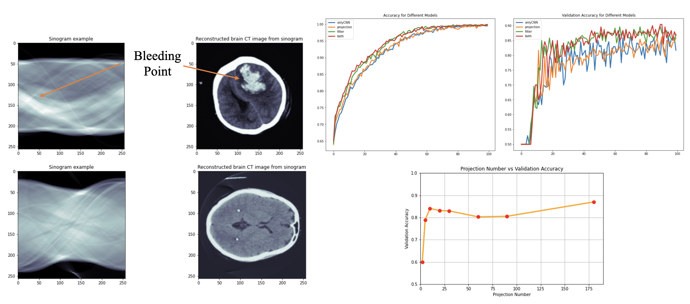

| Paper PDF |

|
Intracranial hemorrhage is an important and serious public health problem, which lead to high risk of death and disability. Computed tomography (CT) is the primary imaging modality used to evaluate the hemorrhage in the head. A widely known drawback of CT is the high doses of radiation applied to the patients during scanning. Reducing the number of projections is one direct way to decrease the amount of radiation exposure at the sacrifice of losing information and worse final reconstructed images. To study the relationship between numbers of CT projections and classification performance, we built a machine learning model to binarily classify intracranial hemorrhage based on sparse view raw CT data. We implemented two separate trainable physical layers to simulate changing mean effective energy of X-ray at each scan and image filtering applied before back projection. The performance of four models that consist different physical layers are evaluated. To explore the effect of sparsity in sinogram on classification accuracy, we trained our final model with eight datasets containing different numbers of projections. We found that the Fourier mask layer brings more improvements to our model performance and a projection number greater than five guarantee us a validation accuracy above 80% with our model. |
| Paper: |
Code and Data:
|